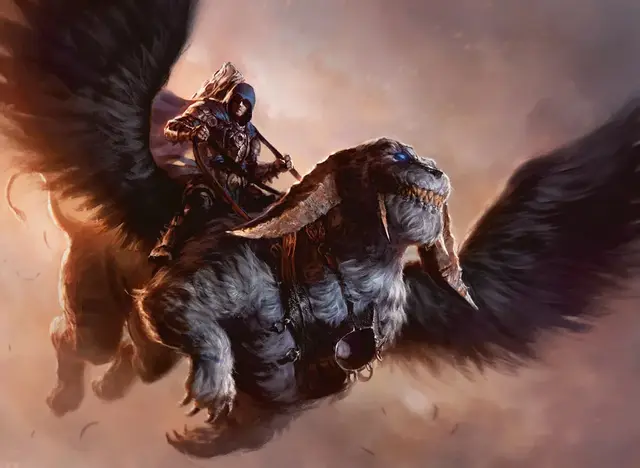

Архонт Триумвирата
Archon of the Triumvirate
Средний Небожитель, законно-нейтральный

Класс Доспеха 18 (латы)
Хиты 144 (17к8 + 68)
Скорость 30 футов
| мод | спас | ||
|---|---|---|---|
| СИЛ | 20 | +5 | +5 |
| ЛОВ | 15 | +2 | +2 |
| ТЕЛ | 19 | +4 | +9 |
| мод | спас | ||
|---|---|---|---|
| ИНТ | 15 | +2 | +2 |
| МДР | 21 | +5 | +10 |
| ХАР | 18 | +4 | +9 |
Навыки Восприятие +10, Проницательность +10
Сопротивление урону дробящий, колющий, рубящий от немагических атак
Иммунитет к состояниям испуг, истощение, очарование
Чувства тёмное зрение 120 футов, пассивное Восприятие 20
Языки Все
Опасность 14 (11500 опыта)
Бонус мастерства +5
Особенности
Глаз Закона. Бонусным действием архонт может нацелиться на существо, которое она может видеть в пределах 120 футов от себя, и определить, какие законы это существо нарушило за последние 24 часа.
Врожденное колдовство. Базовой характеристикой архонта является Мудрость (Сл спасброска от заклинаний 18, +5 к попаданию атаками заклинаниями). Архонт может накладывать следующие заклинания, не нуждаясь в материальных компонентах:
• Неограничено: умиротворение [calm emotions], приказ [command], вызов на дуэль [compelled duel]
Верховая езда. Если архонт не сидит верхом, он может бонусным действием волшебным образом телепортироваться на существо, служащее ему скакуном, при условии, что архонт и его скакун находятся на одном плане существования. Когда он телепортируется, архонт появляется верхом на скакуне вместе со всем снаряжением, которое он носит или несёт.
Пока он верхом и не недееспособен, архонта нельзя застать врасплох, и он, и его скакун совершают спасброски Ловкости с преимуществом. Если хиты архонта уменьшаются до 0 во время езды на его скакуне, то и хиты скакуна также уменьшаются до 0.
Действия
Мультиатака. Архонт совершает две атаки Молотом справедливости.
Молот справедливости. Рукопашная атака оружием: +10 к попаданию, досягаемость 5 футов, одна цель. Попадание: 12 (2к6 + 5) дробящего урона плюс 18 (4к8) урона силовым полем. Если цель — существо, она должна преуспеть в спасброске Силы Сл 18, иначе будет сбита с ног.
Умиротворяющее присутствие. Каждое существо по выбору архонта, которое архонт может видеть в пределах 120 футов от себя, должно преуспеть в спасброске Мудрости Сл 18, иначе цель роняет всё оружие, которое держит, прекращает концентрацию на любых заклинаниях или других эффектах и становится очарованным архонтом на 1 минуту. Очарованное существо может повторять спасбросок в конце каждого своего хода, оканчивая этот эффект в случае успеха. Если существо преуспело в спасброске или эффект на этом существе закончился, существо становится невосприимчивым к «Умиротворяющему присутствию» архонта на следующие 24 часа.
Легендарные действия
Архонт может совершить 3 легендарных действия, выбрав из предложенных ниже вариантов. Одновременно можно использовать только один вариант легендарного действия и только в конце хода другого существа. Архонт восстанавливает потраченные легендарные действия в начале своего хода.
Воссоединение со скакуном. Если архонт не верхом, он волшебным образом телепортируется к своему скакуну и седлает его, пока архонт и его скакун находятся на одном плане существования.
Кара (стоит 2 действия). Архонт совершает атаку Молотом справедливости, а затем его скакун может реакцией совершить рукопашную атаку оружием.
Задержание (стоит 3 действия). Архонт нацеливается на существо, которое он может видеть в пределах 60 футов от себя. Цель должна преуспеть в спасброске Харизмы Сл 18, иначе она будет магически телепортирована на безвредный демиплан до конца следующего хода архонта, после чего цель снова появляется в клетке, которую она покинула, или в ближайшей незанятой клетке, если эта клетка занята.
Описание
Архонты — загадочные, сверхъестественные воплощения самых суровых аспектов закона и порядка. Они поддерживают жёсткое чувство справедливости и безжалостно наказывают тех, кто нарушает закон. Эта природа часто объединяет их с Сенатом Азориусов, и их часто можно увидеть кружащими над гильдией Азориусов верхом на своих крылатых фелидарах, парящих рядом с гусарами на грифонах.
Архонт выглядит как бронированная гуманоидная фигура, почти всегда верхом на своём скакуне. Его лицо обычно скрыто под большим капюшоном; те, кто видел под капюшоном, описывают лицо небесной красоты со строгим выражением и пустыми белыми глазами.
Вечные всадники. Связь между архонтом и его крылатым скакуном-фелидаром настолько тесна, что их иногда считают единым существом, действующим с единым разумом. Если архонта когда-либо сбрасывают с седла, он может волшебным образом вернуться на свое место верхом на своем скакуне в одно мгновение.
Бессмертная природа. Архонт не нуждается в еде, питье или сне.